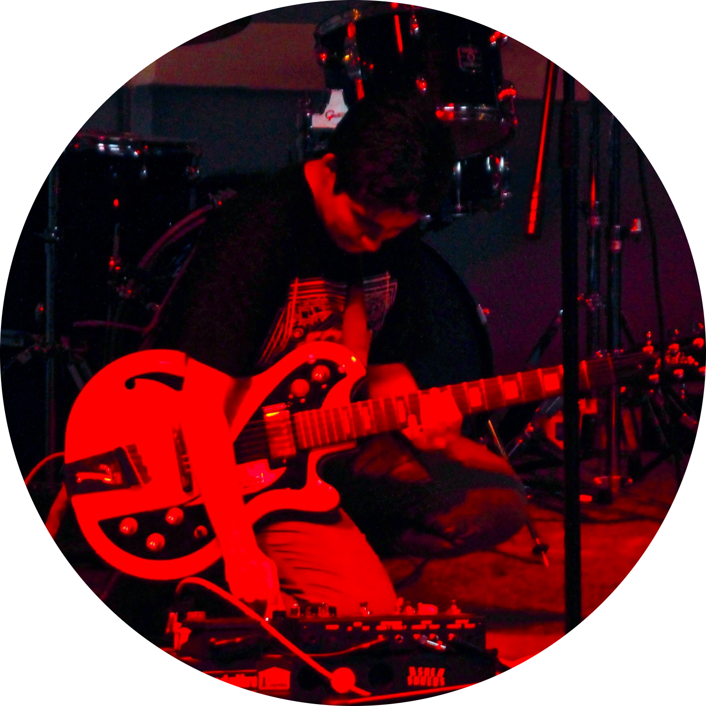

Welcome! I am Zarine, a second-year PhD student in the Department of Human-Centered Design & Engineering (HCDE) at the University of Washington.
My research focuses on how online communities govern and are governed as they navigate disinformation, cyber-enabled influence operations, and related online harms. I am interested in both top-down dynamics – governance by platforms, governments, and international bodies – as well as bottom-up dynamics, in the myriad ways online communities experiment with and enact models of self-governance.
I use mixed methods, combining ethnographic interviews with computational analyses of digital trace data, to study information flows and governance mechanisms across a variety of platforms – from Twitter, to Telegram, to Wikipedia.
Previously, I was an associate editor at the Atlantic Council’s Digital Forensic Research Lab (DFRLab), where I edited and researched investigations about disinformation and related phenomena. Prior to that, I was the assistant editor of the International Enforcement Law Reporter, where I covered cybersecurity and data protection issues.
I recieved my B.A. in Government and French & Francophone Studies in 2017 from the College of William & Mary, where I also worked as a research assistant in the Social Networks and Political Psychology (SNaPP) Lab studying the psychological underpinnings of political behavior, both online and offline.
I created this page as a repository for my academic work. I am hoping to update it with various projects I am working on in the near future. So, stay tuned.